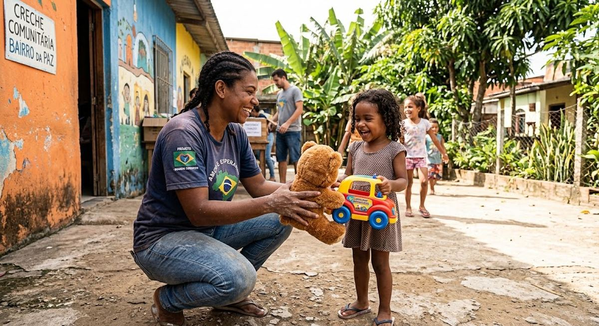

Encontre campanhas de ONGs e associações que precisam de roupas, alimentos e itens de higiene.

BEMVIDA+Escolha uma campanha e informe os itens físicos que deseja entregar.
Divulgue necessidades reais e acompanhe os itens recebidos.
Aproximar pessoas e instituições com transparência e organização.